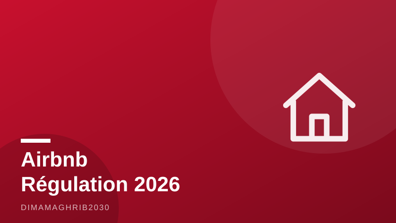

Airbnb au Maroc : boom à deux vitesses et tour de vis fiscal — ce qui change pour vos locations cet étéMorocco's Airbnb Boom Splits in Two: Winning Cities, New Taxes and the Crackdown Reshaping Summer Rentals

Sur le papier, l'été 2026 ressemble à une nouvelle saison record pour la location saisonnière au Maroc. Sur le terrain, le tableau est plus contrasté : certaines villes explosent, d'autres plafonnent, et l'État a décidé de reprendre la main. Entre la TVA imposée à Airbnb depuis le 11 juin, les numéros d'enregistrement désormais obligatoires sur les annonces et les inspections qui se multiplient, le marché d'Airbnb Maroc 2026 change de visage — pour les hôtes comme pour les voyageurs qui réservent leurs nuits d'août.
Agadir s'envole, Chefchaouen ralentit
La croissance est réelle, mais profondément inégale. Selon une enquête de TelQuel publiée fin juillet, Agadir compte désormais 6 075 logements actifs sur Airbnb, soit une progression spectaculaire de 24 % sur un an. La station balnéaire, dopée par ses plages et une desserte aérienne renforcée, s'impose comme la grande gagnante de la saison. À l'autre bout du spectre, Chefchaouen, la perle bleue du Rif, ne progresse que de 9,4 %, avec 665 annonces — un chiffre qui traduit autant la petite taille de la médina que les limites physiques d'un marché déjà saturé.
Marrakech, elle, reste l'indéboulonnable capitale de la location saisonnière au Maroc. D'après les données d'Airbtics, la ville ocre aligne près de 9 818 annonces, un taux d'occupation médian de 62 % et un tarif journalier moyen d'environ 850 dirhams. Un marché mûr, rentable, mais où la concurrence entre riads, appartements de Guéliz et villas de la Palmeraie n'a jamais été aussi féroce. Pour un hôte d'Airbnb Marrakech, se démarquer coûte désormais plus cher — en photos, en services, et bientôt en conformité.
TVA, enregistrement, inspections : l'État serre la vis
Car c'est l'autre grande nouveauté de l'été : le tour de vis réglementaire. Depuis le 11 juin 2026, Airbnb doit s'acquitter de la TVA sur ses revenus générés au Maroc, rapporte TelQuel. Cette TVA Airbnb Maroc marque la fin d'une zone grise fiscale dont la plateforme profitait depuis son arrivée dans le royaume, et aligne le pays sur les pratiques européennes.
Dans le même mouvement, Airbnb, Booking, Vrbo et Expedia exigent désormais qu'un numéro d'enregistrement figure sur chaque annonce marocaine. Et l'administration ne se contente plus de la paperasse : depuis début 2026, les inspections préfectorales se sont intensifiées à Marrakech, Agadir et Essaouira. Les hôtes non déclarés — longtemps majoritaires — risquent la suspension de leur annonce, voire des sanctions. Pour beaucoup de petits propriétaires, l'équation change : se régulariser, ou sortir du marché.
Ce que les voyageurs paieront en août
Pour les visiteurs, l'impact le plus visible se lit sur la facture. Les voyageurs s'acquittent d'une taxe de séjour communale d'environ 10 à 30 dirhams par nuit selon les villes — comptez environ 25 dirhams par adulte et par nuit pour la taxe de séjour à Marrakech en 2026. Une somme modeste à l'échelle d'un week-end, mais qui, ajoutée à la TVA répercutée et aux frais de service, renchérit progressivement les séjours.
En contrepartie, le durcissement de la réglementation des locations de courte durée au Maroc promet un marché plus lisible : des annonces vérifiées, des hôtes identifiés, moins de mauvaises surprises à l'arrivée. Le boom marocain n'est pas terminé — il entre simplement dans l'âge adulte. Et cet été, entre Agadir qui s'emballe et Chefchaouen qui souffle, c'est toute la carte du tourisme marocain qui se redessine, une annonce à la fois.
On paper, summer 2026 looks like another record season for short-term rentals in Morocco. On the ground, the picture is far more complicated: some cities are surging, others are stalling, and the state has decided it wants its cut. Between the VAT now imposed on Airbnb since June 11, mandatory registration numbers on every listing and a wave of on-the-ground inspections, Morocco's vacation rental market is entering a new phase — one that changes the math for hosts and for travelers booking August stays.
Agadir Soars While Chefchaouen Slows
The growth is real, but strikingly uneven. According to a TelQuel investigation published in late July, Agadir now counts 6,075 active Airbnb listings, a remarkable 24 percent jump year over year. The Atlantic beach city, buoyed by expanded air links and relentless demand for its coastline, has emerged as the season's clear winner. At the other end of the spectrum sits Chefchaouen, the famed blue city of the Rif mountains, where listings grew just 9.4 percent to 665 — a figure that reflects both the medina's small footprint and the physical limits of an already saturated market.
Marrakech, meanwhile, remains the undisputed capital of short-term rentals in Morocco. Airbtics data puts the ochre city at roughly 9,818 listings, with a median occupancy rate of 62 percent and an average daily rate of about 850 dirhams. It is a mature, profitable market — but competition among medina riads, Gueliz apartments and Palmeraie villas has never been fiercer. For an Airbnb Marrakech host, standing out now costs more: better photos, better service and, increasingly, better paperwork.
VAT, Registration Numbers and Inspectors at the Door
That paperwork is the summer's other big story. Since June 11, 2026, Airbnb has been required to pay value-added tax on its Moroccan revenue, according to TelQuel — closing a fiscal gray zone the platform had enjoyed since arriving in the kingdom and bringing Morocco in line with European practice.
At the same time, Airbnb, Booking, Vrbo and Expedia now require a registration number to be displayed on every Moroccan listing. And the authorities are no longer content with forms alone: since early 2026, prefectural inspections have intensified in Marrakech, Agadir and Essaouira. Unregistered hosts — long the silent majority of the market — face having their listings suspended, or worse. For many small property owners, the choice under Morocco's tightening vacation rental rules is now stark: get compliant, or get out.
What Travelers Will Pay in August
For visitors, the most visible change shows up on the bill. Guests pay a communal tourist tax of roughly 10 to 30 dirhams per night depending on the city — about 25 dirhams per adult per night in Marrakech in 2026. It is a modest sum over a long weekend, but stacked on top of passed-through VAT and service fees, it nudges the cost of a Moroccan getaway steadily upward.
The trade-off, regulators argue, is a cleaner market. Tighter short-term rental regulations in Morocco promise verified listings, identifiable hosts and fewer unpleasant surprises at check-in — no small thing in cities where ghost listings and bait-and-switch apartments have long frustrated travelers. Morocco's Airbnb boom is not over; it is simply growing up. And this summer, as Agadir races ahead and Chefchaouen catches its breath, the country's tourism map is being redrawn one listing at a time.